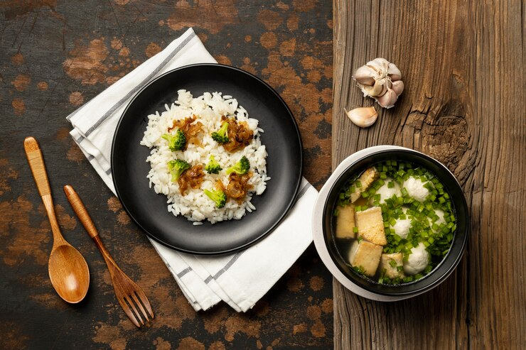
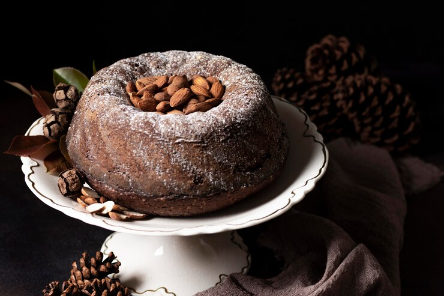
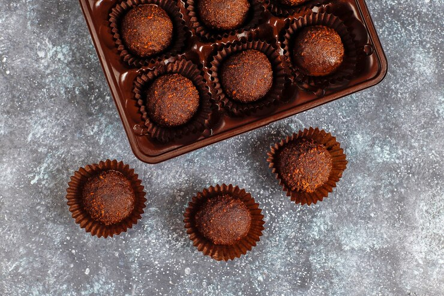

Arroz de Couve-Flor
Ingredientes:
- Arroz
- Couve-Flor
- Cebola Média
- Azeite
Modo de Preparo: Deixe a couve-flor picada. Adicione os ingredientes e refogue bem. Adicione sal, tampe a panela e deixe cozinhar.

Bolo de Café
Ingredientes:
- Farinha de Trigo
- Açúcar
- Café Coado
- Chocolate em Pó
- Ovos
Modo de Preparo: Bata o açúcar, as gemas e o café. Adicione a farinha e chocolate e mexa bem. Bata as claras e junte as misturas.

Coxinha de Brigadeiro
Ingredientes:
- Leite Condensado
- Chocolate em Pó
- Manteiga
- Morango
- Chocolate Granulado
Modo de Preparo: Junte o leite condensado, chocolate em pó e manteiga. Aqueça no fogo baixo. Envolva os morangos e passe no granulado.